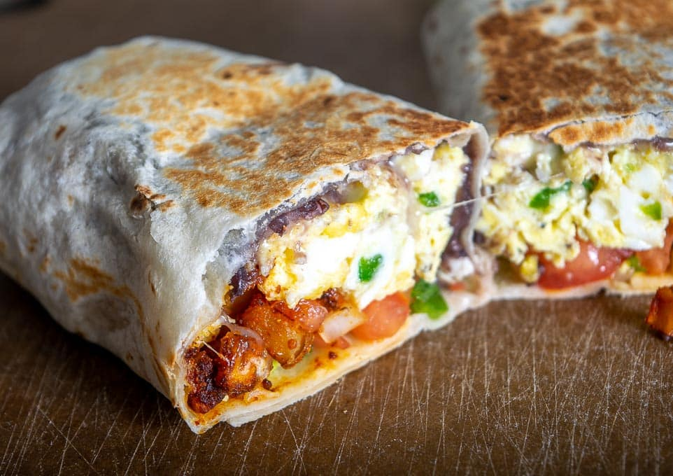

5 Minutes Breakfast Burrito

A delicious quick 5 minutes homemade burrito for your morning pleasure.
Ingredients
- 2 eggs
- 2 tablespoons salsa
- 1 slice reduced-fat American cheese
- 1 tortilla
Steps
- Spray a cereal bowl with nonstick cooking spray.
- Crack the eggs into the bowl, add the salsa, and stir.
- Microwave on high for 1 minute, stir, and cook for another minute or until the mixture firms up.